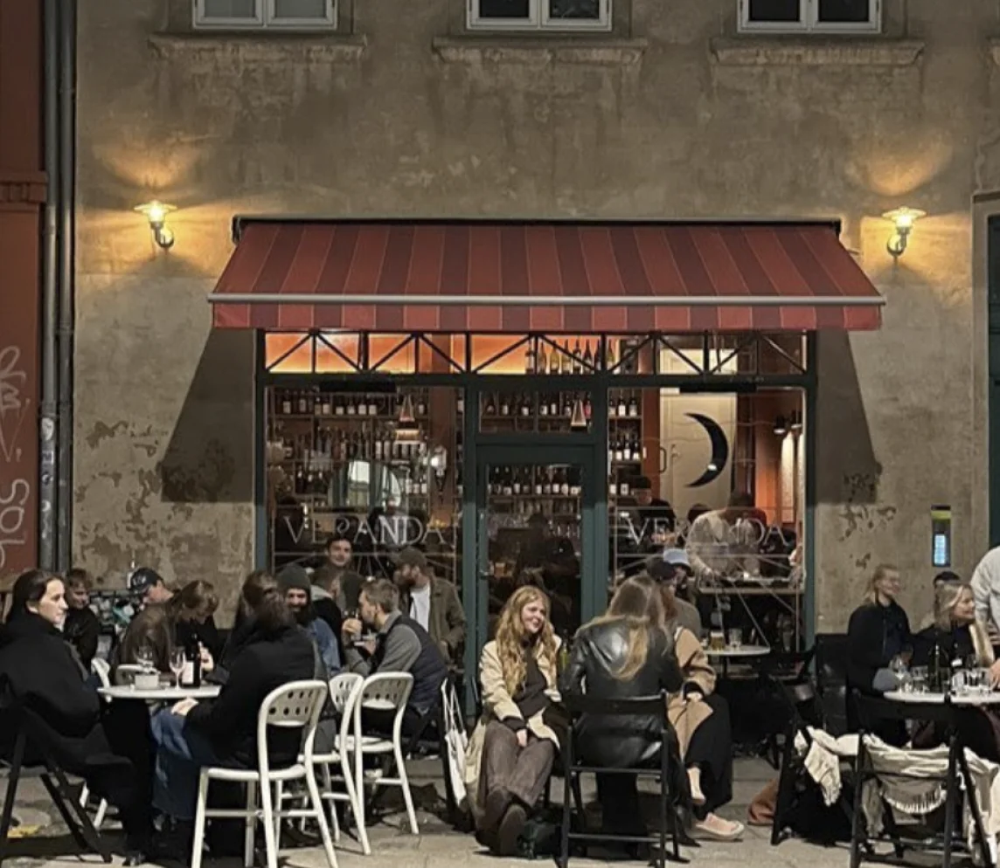
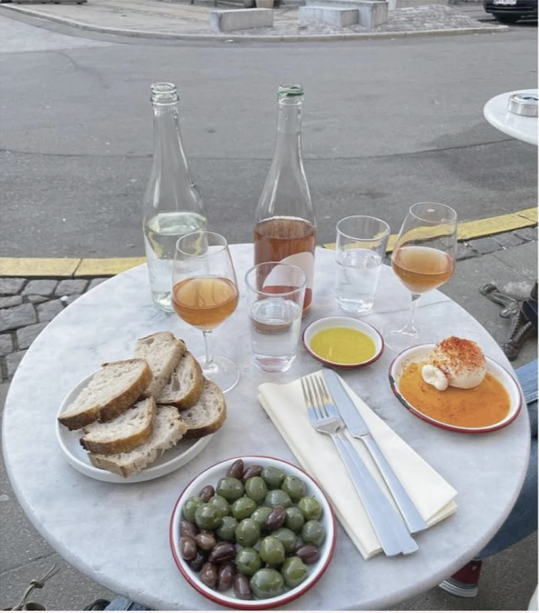
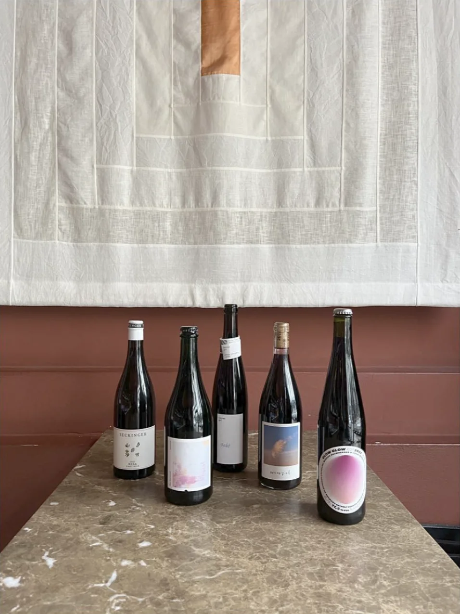

Veranda is situated in Griffenfeldsgade 17 Nørrebro, Copenhagen. We're a petite bar offering an extensive array of natural/low-intervention wines, diverse beers, and quality spirits. We also feature a thoughtfully curated snack menu, including items such as olives, cheeses, charcuterie, tinned seafood, and freshly baked bread, among others. We collaborate with producers who are dedicated to their craft, preferably engaging in regenerative or organic practices. Ultimately, what holds the utmost importance for us is the people and the passion behind the products we offer. Hope to see you around.
  